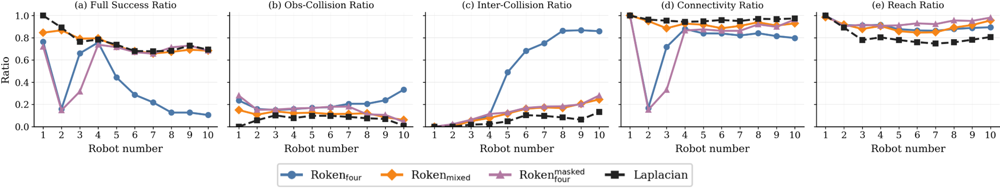

Robots as Tokens: Unified Diffusion Transformer for Coordinated Multi-Robot Trajectory Generation
TL;DR
Can we train a single generative model to generate multi-robot trajectories in a feed-forward manner?
We propose Robots as Tokens (Roken), a unified generative multi-robot planner, capable of single-robot path planning, coordinated multi-robot planning, and conditional planning, by simply changing the input robot tokens.
Motivation
Robot planning has undergone a paradigm shift from classical optimization to distribution generation. Yet, most existing works propose generative planners for single-robot scenarios, or combine these single-robot planners with iterative post-processing for multi-robot planning.
Roken asks whether coordinated multi-robot trajectories, as a special spatiotemporal distribution, can be learned and generated with one generative model in a feed-forward manner.
Challenges
- Capability: Can one neural network generate multi-robot trajectories in a feed-forward manner?
- Scalability: Can one model support variable numbers of robots without structural changes or additional training?
- Generalizability: Can the model generalize to new environments and transfer to real-world multi-robot navigation?
Method Overview
We propose Robots as Tokens (Roken), a unified generative model based on a diffusion transformer (DiT) that treats coordinated multi-robot trajectories as a special spatiotemporal distribution, and learns the map-conditioned trajectory distribution from expert data. The key design of Roken is to represent each robot as a robot token, in which robot tokens naturally interact with each other through self-attention, and attend to environment map tokens for spatial awareness.

Pre-Training with Expert Data: In pre-training, Roken absorbs expert trajectories with different team sizes as different numbers of robot tokens, with random token masking for conditional trajectory generation. The training objective combines trajectory denoising with auxiliary tasks for local occupancy reconstruction and waypoint prediction, for enhanced condition injection and spatial understanding.
Post-Training with Reinforcement Learning: After pre-training, the policy is further refined through trajectory-level reinforcement learning to enhance its long-term planning capability and safety adherence.
Main Results
Roken is evaluated on unseen cluttered environments under a strict full-success metric that requires goal reaching, obstacle avoidance, inter-robot collision avoidance, and communication connectivity.
One Model, Many Trajectories
One Roken model is able to generate trajectories of multiple robots in a feed-forward manner, with coordinated behavior.
One Model, Variable Teams
Roken demonstrates good scalability due to its scalable design. After training with mixed team sizes, one Roken model can support variable numbers of robots without structural changes or additional training, by simply changing the number of input robot tokens.

One Model, New Scenarios
Roken adapts to new environments with only partially observed maps (although Roken is never trained in such scenarios), demonstrating its strong generalizability and transferability to new scenarios.
Ablations
Roken outperforms the baseline methods used to generate the expert data, with more efficient and safer trajectories. Trajectory-level reinforcement learning further enhances the long-term planning capability of the model with the highest full-success ratio.
| Model | Ltraj | Locc | Lwp | Lsdf | Full success ↑ |
Obs- Colli. ↓ |
Inter- Colli. ↓ |
Connect. ↑ | Reach ↑ | Length ↓ |
|---|---|---|---|---|---|---|---|---|---|---|
| SGG | -- | 0.479 | 0.000 | 0.028 | 0.505 | 0.976 | 0.492 | |||
| GNN | -- | 0.327 | 0.329 | 0.000 | 0.414 | 0.999 | 2.174 | |||
| Laplacian | -- | 0.741 | 0.098 | 0.053 | 0.949 | 0.784 | 1.178 | |||
| Rokenfour | ✓ | ✓ | ✓ | ✓ | 0.765 | 0.145 | 0.081 | 0.873 | 0.923 | 0.623 |
| Rokenmixed | ✓ | ✓ | ✓ | ✓ | 0.779 | 0.112 | 0.098 | 0.899 | 0.915 | 0.629 |
| RokenRL | ✓ | ✓ | ✓ | ✓ | 0.790 | 0.127 | 0.089 | 0.920 | 0.947 | 0.622 |
|
Rokenfour Ablations |
✓ | × | × | × | 0.262 | 0.707 | 0.110 | 0.997 | 1.000 | 0.523 |
| ✓ | ✓ | × | × | 0.724 | 0.179 | 0.088 | 0.844 | 0.894 | 0.631 | |
| ✓ | ✓ | ✓ | × | 0.698 | 0.225 | 0.101 | 0.874 | 0.910 | 0.619 | |
| ✓ | ✓ | ✓ | ✓ | 0.719 | 0.164 | 0.122 | 0.865 | 0.909 | 0.628 | |
Note: All Rokenfour ablation models are trained for 200 epochs on the same four-robot datasets. All methods are evaluated on 1000 unseen environments with five independent runs, which in total involve 5000 evaluation episodes. Bold: best performance; underline: second-best performance.
Limitations
Roken can fail in local-minimum scenarios that are underrepresented in the training data. Future improvements may include dataset enhancement, reinforcement learning post-training, and online safety shielding for real-world deployments.

BibTeX
@article{roken2026,
title={Robots as Tokens: Unified Diffusion Transformer for Coordinated Multi-Robot Trajectory Generation},
author={Author list to be added},
journal={Project page preview},
year={2026}
}